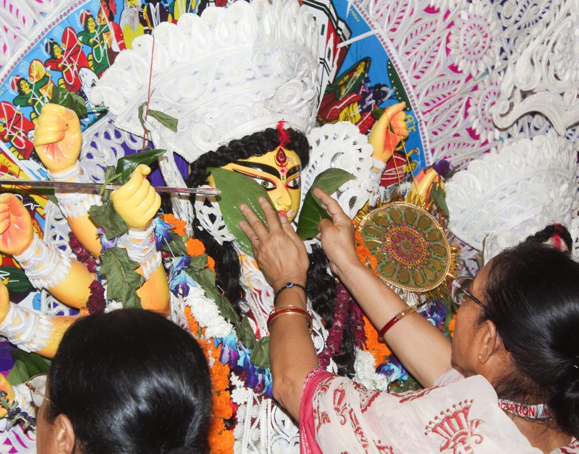
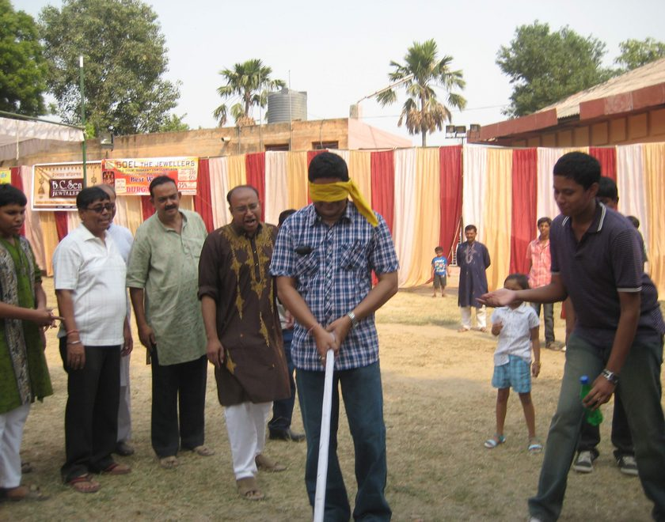
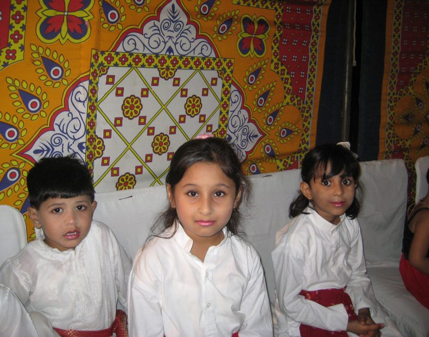
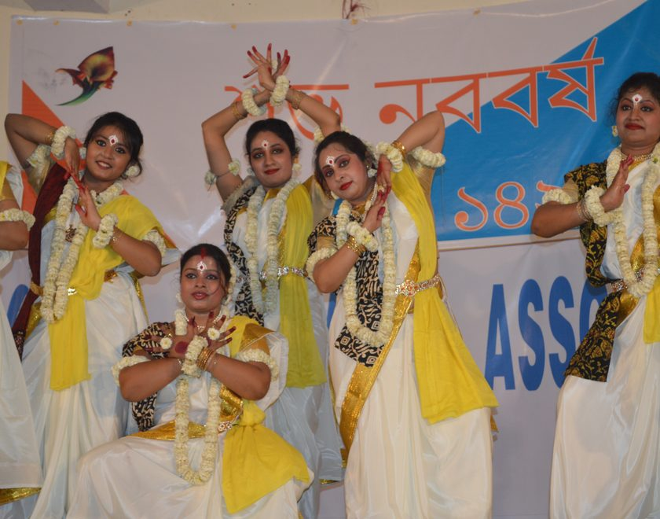
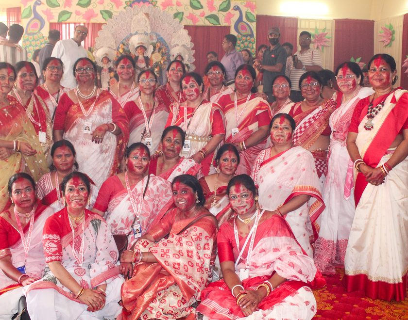
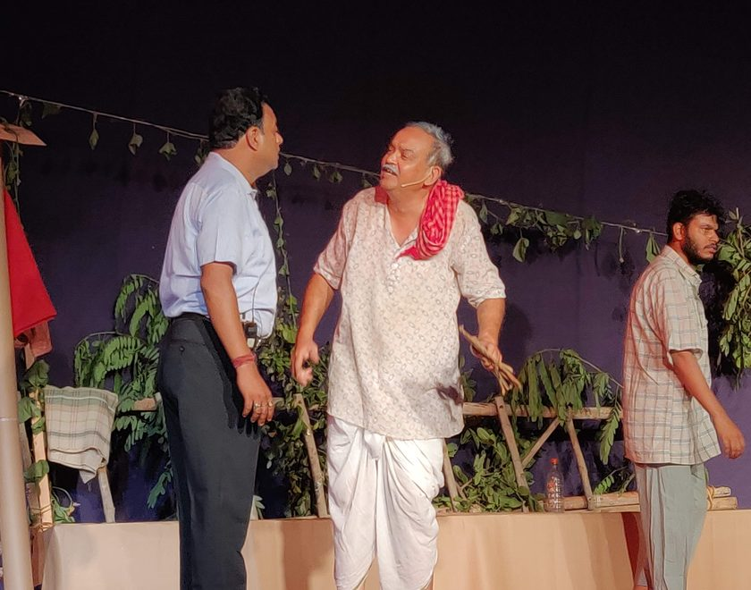
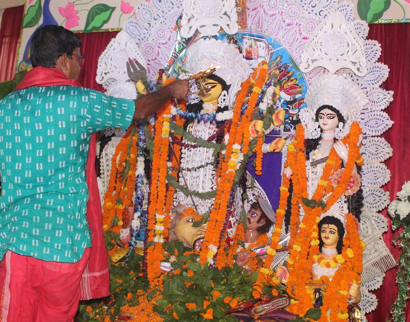
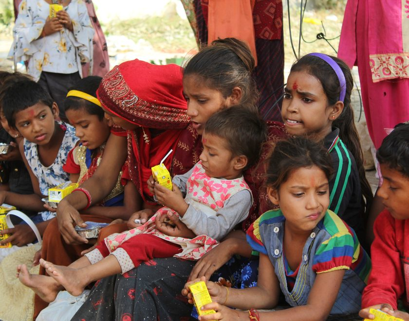
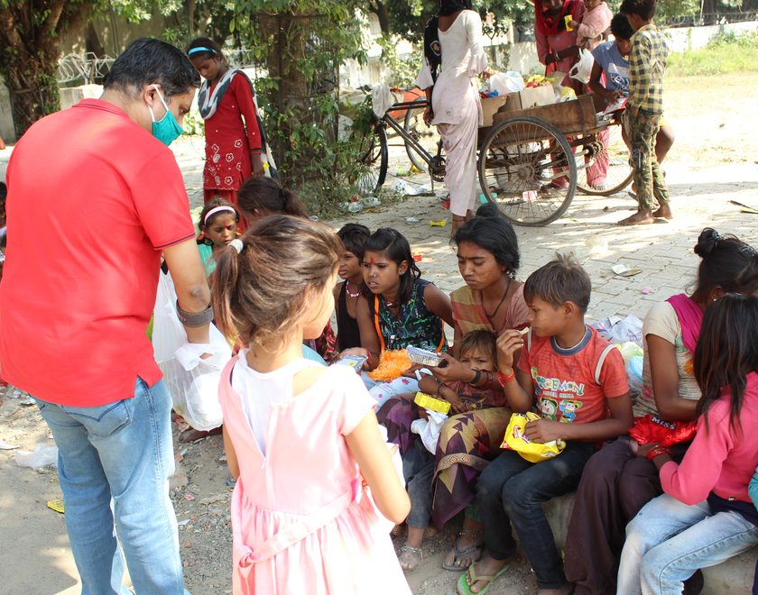
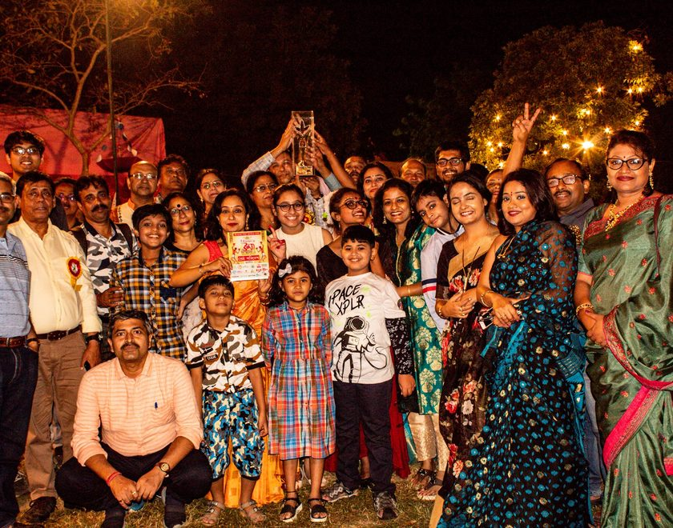
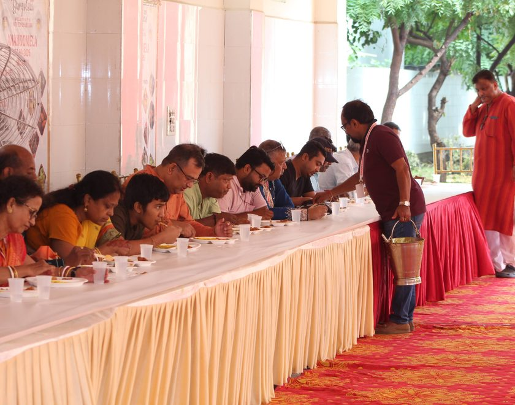
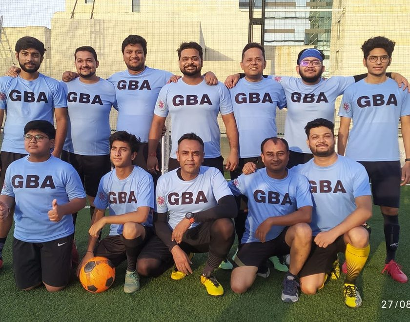
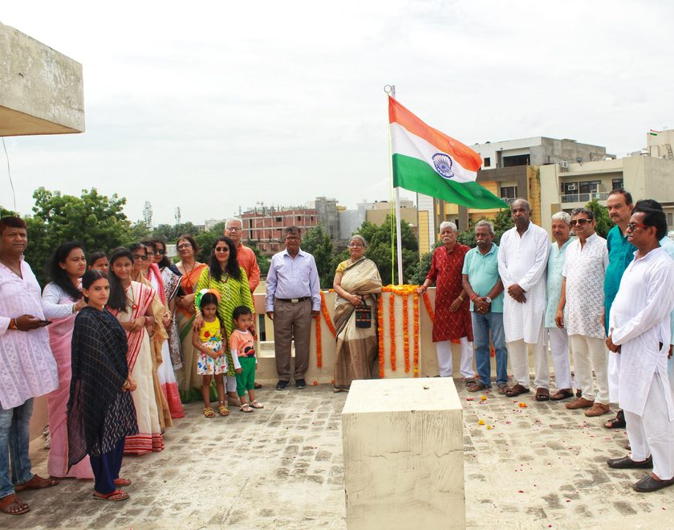
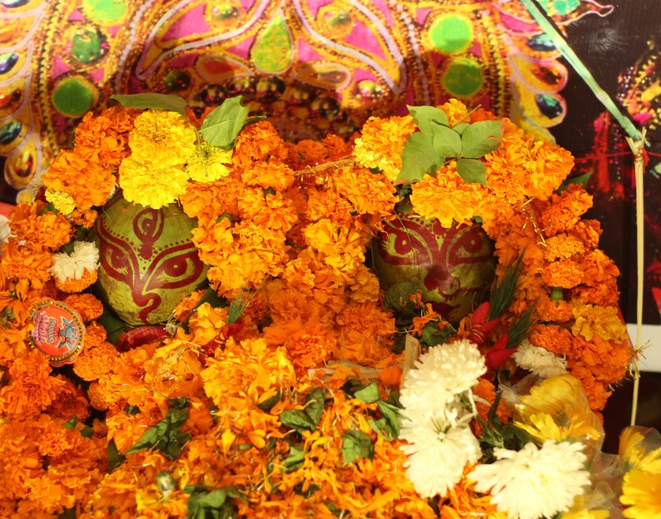
From a handful of Bengali families gathering in 1982 to one of Gurugram's most respected cultural organisations today, Gurgaon Bengalee Association has spent over four decades nurturing a shared home for language, faith and festivity. Explore our story, meet the community and join us in celebrating what makes this tradition so special.
The first community Durga Puja was organised in Gurgaon.
Gurgaon Bengalee Association became the city's first registered Bengali cultural organisation.
Music, theatre, literary events and larger celebrations became an annual tradition.
Celebrations continued while following all safety protocols.
Celebrating four and a half decades of faith, culture and togetherness.
Details on membership and cultural programme registration will be announced here shortly. Check back for updates.
Names and roles of this year's Executive Committee will be published here once finalised.
Auditions for music, dance and theatre performances during Durga Puja 2026 are open. View details →
বাঙালি খাপছাড়া এদিকে ওদিকে কয়েকটি ঘর। ছোট্ট একটা গ্রাম্য পরিবেশ "গুড়গাও" সহরে… মাছের বাজারে দাদা কোথায় থাকেন? থেকে শুরু, তারপর সপরিবারে বাঙালি সমাজে এ ওর বাড়িতে অতিথি।
জি বি এ এবং গুরগাঁও এর বাঙালী শুভ মণ্ডলের সবাইকে আমার আন্তরিক ভালোবাসা ও স্নেহ, যেখানে চল্লিশ বছর ধরে আমি সবার সাথে একত্রিত।